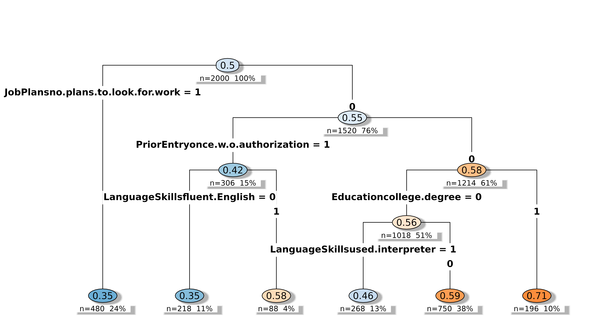
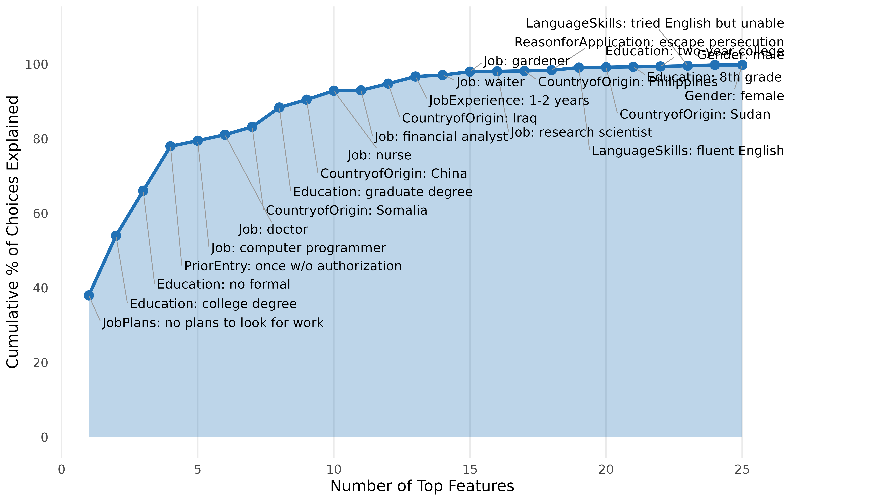
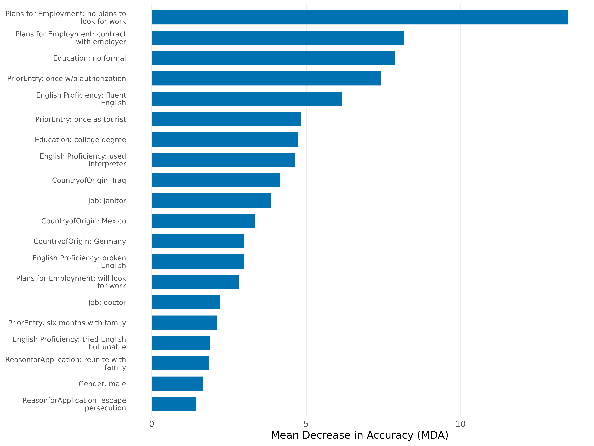

What cjdiag does
Standard conjoint analysis tools estimate Average Marginal Component Effects (AMCEs) — the causal effect of changing a single attribute level. AMCEs tell you what respondents prefer, but not how they decide: which attribute levels they actually attend to, which ones they ignore, and in what order they process information.
cjdiag fills this gap. It works at the level of individual attribute levels — not aggregated attributes — because the specific level (e.g., “no plans to look for work”, not just “Job Plans” as a whole) is what triggers respondent decisions.
We use the bundled immigration conjoint from Hainmueller & Hopkins (2015): 2,000 profile evaluations, 9 attributes, ~50 attribute levels.
f <- Chosen_Immigrant ~ Gender + Education + LanguageSkills +
CountryofOrigin + Job + JobExperience + JobPlans +
ReasonforApplication + PriorEntry1. Random Forest: Which attribute levels matter most?
Random forests measure how much each individual attribute level contributes to predicting choices. The Mean Decrease in Accuracy (MDA) captures how much worse predictions get when that level’s values are shuffled — higher means more important. The root node rate tracks how often each level appears as the very first split, a proxy for which cue respondents check first.
rf <- cj_fit(f, data = immig, method = "forest")
rf
#> Conjoint Random Forest
#> ======================
#>
#> Resolution: levels
#> Trees: 500
#> OOB Error: 40.3%
#> Observations: 2,000
#> Attributes: 9
#> Levels: 50
#>
#> Top 10 levels by MDA:
#>
#> # A tibble: 10 × 5
#> rank attribute level mda root_pct
#> <int> <chr> <chr> <dbl> <dbl>
#> 1 1 JobPlans no plans to look for work 13.5 15.4
#> 2 2 JobPlans contract with employer 8.18 11.2
#> 3 3 Education no formal 7.87 7.4
#> 4 4 PriorEntry once w/o authorization 7.42 10.4
#> 5 5 LanguageSkills fluent English 6.16 8.2
#> 6 6 PriorEntry once as tourist 4.83 2.4
#> 7 7 Education college degree 4.75 6.4
#> 8 8 LanguageSkills used interpreter 4.66 5.6
#> 9 9 CountryofOrigin Iraq 4.15 4.6
#> 10 10 Job janitor 3.87 3
plot(rf, top_n = 25)
The top levels are specific: “no plans to look for work” (JobPlans), “no formal” education, “once without authorization” (PriorEntry), “fluent English”. These are the attribute levels that drive choices — not the attributes as aggregated categories.
2. Decision Tree: How do respondents structure their decisions?
A single classification tree reveals the hierarchical elimination structure. The root split is the gatekeeper — the attribute level that matters most. Deeper splits are conditional on earlier ones. The tree uses only a subset of available levels, consistent with respondents processing a few key cues rather than all information.
tr <- cj_fit(f, data = immig, method = "tree")
tr
#> Conjoint Decision Tree
#> ======================
#>
#> Resolution: levels
#> Complexity (cp): 0.005
#> Root split: JobPlansno.plans.to.look.for.work
#> Depth: 4
#> Terminal nodes: 6
#> Observations: 2,000
#> Levels: 50
#>
#> Top 10 levels by importance:
#>
#> # A tibble: 10 × 4
#> rank attribute level importance
#> <int> <chr> <chr> <dbl>
#> 1 1 JobPlans no plans to look for work 15.0
#> 2 2 PriorEntry once w/o authorization 6.51
#> 3 3 Education college degree 3.81
#> 4 4 LanguageSkills used interpreter 3.49
#> 5 5 LanguageSkills fluent English 3.21
#> 6 6 Gender female 0
#> 7 7 Gender male 0
#> 8 8 Education 4th grade 0
#> 9 9 Education 8th grade 0
#> 10 10 Education graduate degree 0
plot(tr)
3. Nested Marginal Means: In what order do attribute levels settle choices?
Nested marginal means (Dill, Howlett & Mueller-Crepon 2024) work through attribute levels sequentially. At each step, the method identifies the level whose marginal mean deviates most from 50/50 (the most decisive level), then removes choice tasks where that level cannot discriminate (because both profiles share it), and repeats. The cumulative plot shows how quickly the top levels account for the total decisiveness.
nmm <- cj_fit(f, data = immig, method = "nmm", resp_id = "CaseID", n_boot = 0)
nmm
#> Conjoint Nested Marginal Means
#> ==============================
#>
#> Observations: 2,000
#> Attributes: 9
#> Levels: 50
#>
#> Total pairs: 1,000
#> After top 5: 205 (20.5% remaining)
#>
#> Top 10 levels by decisiveness:
#>
#> # A tibble: 10 × 6
#> rank attribute level mm decisiveness pct_of_total
#> <int> <chr> <chr> <dbl> <dbl> <dbl>
#> 1 1 JobPlans no plans to look for w… 0.305 0.389 38
#> 2 2 Education college degree 0.687 0.375 16
#> 3 3 Education no formal 0.331 0.339 12.1
#> 4 4 PriorEntry once w/o authorization 0.303 0.395 11.9
#> 5 5 Job computer programmer 0.733 0.467 1.5
#> 6 6 Job doctor 0.688 0.375 1.6
#> 7 7 CountryofOrigin Somalia 0.714 0.429 2.1
#> 8 8 Education graduate degree 0.712 0.423 5.2
#> 9 9 CountryofOrigin China 0.762 0.524 2.1
#> 10 10 Job nurse 0.667 0.333 2.4
plot(nmm)
4. Marginal R-squared: Which attributes did each respondent actually use?
For each individual respondent, marginal R-squared (Jenke et al. 2021) measures how well each attribute alone explains their choices. Respondents with R-squared near zero for an attribute likely ignored it entirely. This detects attribute non-attendance at the individual level.
mr2 <- cj_fit(f, data = immig, method = "marginal_r2", resp_id = "CaseID")
#> Warning in summary.lm(fit): essentially perfect fit: summary may be unreliable
#> Warning in summary.lm(fit): essentially perfect fit: summary may be unreliable
#> Warning in summary.lm(fit): essentially perfect fit: summary may be unreliable
#> Warning in summary.lm(fit): essentially perfect fit: summary may be unreliable
#> Warning in summary.lm(fit): essentially perfect fit: summary may be unreliable
#> Warning in summary.lm(fit): essentially perfect fit: summary may be unreliable
#> Warning in summary.lm(fit): essentially perfect fit: summary may be unreliable
#> Warning in summary.lm(fit): essentially perfect fit: summary may be unreliable
#> Warning in summary.lm(fit): essentially perfect fit: summary may be unreliable
#> Warning in summary.lm(fit): essentially perfect fit: summary may be unreliable
#> Warning in summary.lm(fit): essentially perfect fit: summary may be unreliable
#> Warning in summary.lm(fit): essentially perfect fit: summary may be unreliable
#> Warning in summary.lm(fit): essentially perfect fit: summary may be unreliable
#> Warning in summary.lm(fit): essentially perfect fit: summary may be unreliable
#> Warning in summary.lm(fit): essentially perfect fit: summary may be unreliable
#> Warning in summary.lm(fit): essentially perfect fit: summary may be unreliable
#> Warning in summary.lm(fit): essentially perfect fit: summary may be unreliable
#> Warning in summary.lm(fit): essentially perfect fit: summary may be unreliable
#> Warning in summary.lm(fit): essentially perfect fit: summary may be unreliable
#> Warning in summary.lm(fit): essentially perfect fit: summary may be unreliable
#> Warning in summary.lm(fit): essentially perfect fit: summary may be unreliable
#> Warning in summary.lm(fit): essentially perfect fit: summary may be unreliable
#> Warning in summary.lm(fit): essentially perfect fit: summary may be unreliable
#> Warning in summary.lm(fit): essentially perfect fit: summary may be unreliable
#> Warning in summary.lm(fit): essentially perfect fit: summary may be unreliable
#> Warning in summary.lm(fit): essentially perfect fit: summary may be unreliable
#> Warning in summary.lm(fit): essentially perfect fit: summary may be unreliable
#> Warning in summary.lm(fit): essentially perfect fit: summary may be unreliable
#> Warning in summary.lm(fit): essentially perfect fit: summary may be unreliable
#> Warning in summary.lm(fit): essentially perfect fit: summary may be unreliable
#> Warning in summary.lm(fit): essentially perfect fit: summary may be unreliable
#> Warning in summary.lm(fit): essentially perfect fit: summary may be unreliable
#> Warning in summary.lm(fit): essentially perfect fit: summary may be unreliable
#> Warning in summary.lm(fit): essentially perfect fit: summary may be unreliable
#> Warning in summary.lm(fit): essentially perfect fit: summary may be unreliable
#> Warning in summary.lm(fit): essentially perfect fit: summary may be unreliable
#> Warning in summary.lm(fit): essentially perfect fit: summary may be unreliable
#> Warning in summary.lm(fit): essentially perfect fit: summary may be unreliable
#> Warning in summary.lm(fit): essentially perfect fit: summary may be unreliable
#> Warning in summary.lm(fit): essentially perfect fit: summary may be unreliable
#> Warning in summary.lm(fit): essentially perfect fit: summary may be unreliable
#> Warning in summary.lm(fit): essentially perfect fit: summary may be unreliable
#> Warning in summary.lm(fit): essentially perfect fit: summary may be unreliable
#> Warning in summary.lm(fit): essentially perfect fit: summary may be unreliable
mr2
#> Conjoint Marginal R-squared Importance (Jenke et al. 2021)
#> ==========================================================
#>
#> Resolution: levels
#> Respondents: 200
#> Observations: 2,000
#> Attributes: 9 (50 levels)
#>
#> Top 10 levels by mean absolute coefficient:
#>
#> # A tibble: 10 × 7
#> rank attribute level mean_coef mean_abs_coef sd_coef attr_mean_r2
#> <int> <chr> <chr> <dbl> <dbl> <dbl> <dbl>
#> 1 1 Job research … 0.161 0.637 0.743 0.194
#> 2 2 Job construct… 0.0384 0.603 0.699 0.194
#> 3 3 CountryofOrigin France 0.0519 0.574 0.703 0.193
#> 4 4 CountryofOrigin India 0.00745 0.567 0.689 0.193
#> 5 5 Job teacher 0.116 0.553 0.653 0.194
#> 6 6 CountryofOrigin Poland 0.00940 0.547 0.673 0.193
#> 7 7 Job janitor -0.123 0.547 0.650 0.194
#> 8 8 Job doctor 0.126 0.540 0.670 0.194
#> 9 9 CountryofOrigin Somalia 0.0603 0.538 0.667 0.193
#> 10 10 CountryofOrigin Germany 0.0108 0.537 0.665 0.1935. CRT/HierNet: Which attribute levels genuinely drive choices?
CRT applies increasing statistical penalty (L1 regularization via hierNet) to progressively strip away weak signals. Levels that keep their effect even under heavy penalization genuinely drive choices; levels that vanish quickly are noise or redundant. Requires the hierNet package.
crt <- cj_fit(f, data = immig, method = "crt",
lambda_grid = c(5, 10, 20, 50), n_folds = 3, n_perm = 5)
crt
#> Conjoint CRT/HierNet Model
#> ==========================
#>
#> Optimal lambda: 5
#> Lambda (1-SE rule): 5
#> Accuracy: 64.8%
#> Observations: 2,000
#> Attributes: 9
#> Levels: 50
#> Attended levels: 50 / 50
#>
#> Top 10 levels by MDA:
#>
#> # A tibble: 10 × 5
#> rank attribute level mda max_lambda
#> <int> <chr> <chr> <dbl> <dbl>
#> 1 1 JobPlans no plans to look for work 4.14 50
#> 2 2 JobPlans contract with employer 3.49 50
#> 3 3 PriorEntry once w/o authorization 1.88 50
#> 4 4 Education college degree 1.81 50
#> 5 5 CountryofOrigin Iraq 1.77 50
#> 6 6 Education no formal 1.57 50
#> 7 7 LanguageSkills used interpreter 1.28 50
#> 8 8 ReasonforApplication escape persecution 1.27 50
#> 9 9 LanguageSkills fluent English 1.27 50
#> 10 10 ReasonforApplication seek better job 0.910 20Plot customization
All plot methods return ggplot2 objects and accept customization:
plot(rf,
palette = "colorblind",
attribute.names = c(LanguageSkills = "English Proficiency",
JobPlans = "Plans for Employment"),
top_n = 20)
Three palettes: "default", "colorblind"
(Okabe-Ito), "grey".
Set global defaults with set_cjdiag_theme() and
set_cjdiag_labels() so all plots use the same settings
without repeating arguments.
Method summary
| Method | cj_fit() |
Question |
|---|---|---|
| Random Forest | "forest" |
Which attribute levels matter most? |
| Decision Tree | "tree" |
How do respondents structure their decisions? |
| Nested MM | "nmm" |
In what order do attribute levels settle choices? |
| Marginal R-sq | "marginal_r2" |
Which attributes did each respondent actually use? |
| CRT/HierNet | "crt" |
Which attribute levels genuinely drive choices? |